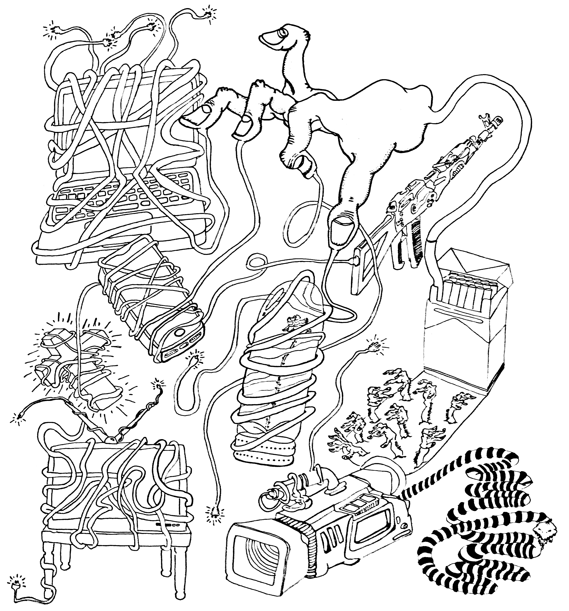

My goal was to record a video using only one continious shot.I was inspired by one of Andy Warhol's earlier video project named "Empire." Skateboarding being primarily shot using long shots, I had the idea to record someone casually skating through a neighborhood. Through the title, I recorded my friend skating from point A to B. Skateboarding and filming go hand and hand so to be able to capture something so simple yet so pure makes all the takes worth it.
The goal for the assignment was to challenge ourselves in creating something that was new to you. Prior to this, I had just learned how to stipple and was curious on how much I could blend this new style of shading with my current drawings. It was an extremely tedious project but this peice was the first complete peice of work that I had completely shaded. I was reminded that through extreme patience and trusting in the process, you will be rewarded at the end of it.
Working off of "See you Soon", I wanted to explore deeper into the objects I can reflect my projections off too. Playing off a projection, I attempted to bend the images using a plastic cube. Using a mixture of found footage and videos that I recored, I created a video that represents what I believe my mind thinks about. This being my first video that was presented in an exhibition made this project all the more memorable.
I wanted to create a video that displayed addiction. Using found footage I distorted the videos the more you watch with layering the videos of flowers growing and dying with videos the glorified smoking. I had my projection projected onto a mirror that was to represent a reflection of a self reflection.
Focused directly on the misdirection we recieve by the screens in our lives, I've drawn different forms of media being wrapped together by wires. It represents the connection that we feel when we use these items. Yet I mainly highlight the lack of authenticity of these connections that we have. I feel that if anything, us as people are less connected then ever even with all the forms of media, its just one big con.
With the use of time lapse videos and footage I filmed myself, I wanted to show walking around a city in San Jose, compared to other cities around the world. The two videos on the left and right display my view walking around downtown, and the middle is an area I would one day like to explore. If I were to have this installed, I would want the views to be walking on a treadmill while watching my video.
Using basic tools in P5 I wanted to create a fight scene of movement. There isn't much function to the screen but is more visually appealing. I felt a bit confined to my knowledge with p5 but felt very empowering figuring out the language. I wish the further explore p5 in the future.
Using Html and css, I was able to create a website that explores my feelings towards learning html coding. Like any medium you are too comfortable with, there was a lot of trial and error along the way. The videos on the main page all link further to the same page but all display gifs that felt appropriate to the context. I was inspired by the past projects showed in art 74.
Being inspired from pieces that explore the idea of surveillance, I wanted to create a website that linked all together and felt like how the internet really is. The idea that we are being watched by the FBI and being monitored is something that gets thrown under the rug but knowing how the internet is connected really makes you think.
To pull sounds from everyday activities and combine them to make a completely new sound is a concept that is very interesting to me. Not have much expertise in sound editing, I did my best to create a track that made didn't sound like a song but more of something you can vibe off from.